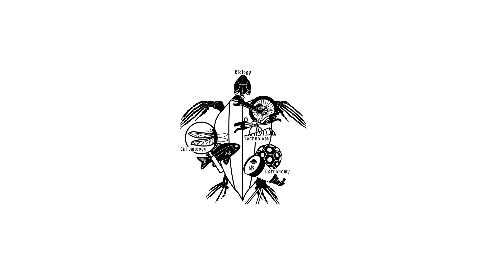

実験教室
磁性流体を作ってみよう！
予約制
磁性流体とは流体だけれど、磁性を帯びているもののことです。 この実験では鉄粉にサラダ油を加えます。そして磁石を近づけると…？ 身近にあるものを使って、理科の不思議に触れてみよう！
予約について
プランクトンを観察しよう！
予約制
本校には１人１台分の顕微鏡があります。この実験では池の水が入っている水槽から駒込ピペットでプランクトンを採取し、プレパラートを作成して顕微鏡で観察をします。
予約について
トップ
more →
企画・展示
more →

アンケート
more →
東京都市大学等々力中学校高等学校 理科部 HP
東京都市大学等々力中学校高等学校 理科部 Twitter
東京都市大学等々力中学校高等学校 HP
Copyright©TCU Todoroki Science Research Club , All Rights Reserved.